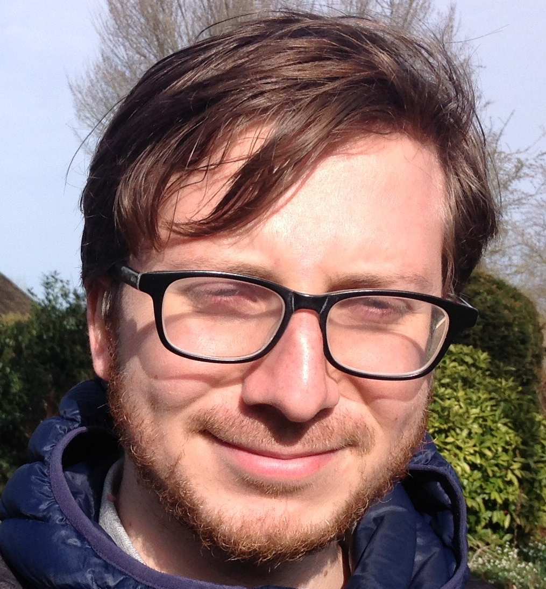
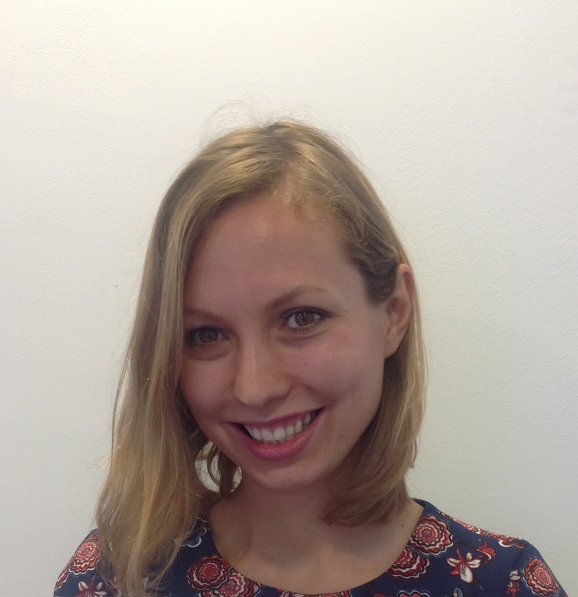

<!DOCTYPE html><html lang="en"><head><meta charset="UTF-8"><title>Fernando & Jenya's Wedding | Tyumen, Russia. May 26, 2017</title><link rel="shortcut icon" type="image/x-icon" href="images/favicon.png"><meta name="viewport" content="width=device-width, initial-scale=1"><link rel="stylesheet" href="vendors/reset/reset.css"><link rel="stylesheet" href="vendors/bootstrap/bootstrap.min.css"><link rel="stylesheet" href="css/main.css"><link rel="stylesheet" href="https://fonts.googleapis.com/css?family=Lora:400,400i,700,700i|Marck+Script|PT+Sans+Caption:400,700|PT+Sans:400,400i,700,700i&amp;amp;subset=cyrillic"><link rel="stylesheet" href="https://fonts.googleapis.com/css?family=Neucha"><meta property="og:title" content="title Fernando &amp; Jenya's Wedding | Tyumen, Russia. May 26, 2017"><meta property="og:type" content="website"></head><body></body></html><div class="hero" id="hero"><div class="container-fluid"><div class="row hero__text"><div class="col-md-12"><div class="hero__shape"><h1 class="eyebrow eyebrow_invert">Фернандо<br>+<br>Евгения</h1></div><div class="hero__date">26 Мая 2018</div><div class="hero__place">Тюмень</div></div></div></div></div><div class="newlyweds" id="newlyweds"><div class="container-fluid"><div class="row"><div class="col-sm-6 col-md-4 col-md-offset-2 newlyweds__gleb"><h3 class="newlyweds__header">Фернандо<br>Уртадо</h3><div class="newlyweds__subheader">жених</div></div><div class="col-sm-6 col-md-4 newlyweds__maria"><h3 class="newlyweds__header">Нохрина<br>Евгения</h3><div class="newlyweds__subheader">невеста</div></div></div></div></div><div class="timer"><div class="container-fluid"><div class="row"><div class="col-sm-6 col-sm-offset-3 col-md-6 col-md-offset-3 timer__row"><h5>Mы будем очень рады отпраздновать святое таинство брака с вами. Мы надеемся, что вы сможете присоединиться к нам в этот особый день.</h5><h5>Чтобы облегчить общение, мы создали этот простой сайт, который, мы надеемся, вы найдете полезным. Наша свадьба все еще находится в процессе планирования, поэтому некоторые детали будут добавлены позже, мы будем регулярно публиковать обновления на сайте. Вы можете найти наши контакты внизу страницы.</h5></div></div></div></div><div class="timer" id="timerblock"><div class="container-fluid"><div class="row"></div><div id="clockdiv"><div><span class="days"></span><div class="smalltext">Дни</div></div><div><span class="hours"></span><div class="smalltext">Часы</div></div><div><span class="minutes"></span><div class="smalltext">Минуты</div></div><div><span class="seconds"></span><div class="smalltext">Секунды</div></div></div></div></div><div class="event" id="event"><div class="container-fluid"><div class="row event__center"><div class="col-md-4 col-md-push-4"><div class="eyebrow eyebrow_invert event__midtitle">Свадебные<br>события</div></div><div class="col-sm-6 col-md-4 col-md-pull-4 event__wrapper event__wrapper_registration"><div class="event__block"><h4 class="event__title">Венчание</h4><div class="event__time clearfix"><div class="event__time_left"><div class="event__time__inner"><div>время будет определено позже</div></div></div><div class="event__time_right"><div class="event__time__inner"><div>Суббота<br> 26 Мая 2018</div></div></div></div><div class="event__description">Торжественное венчание пройдет в При­ходе Рим­ско-Ка­то­ли­че­ской Церк­ви свя­то­го Пра­вед­но­го Иоси­фа.</div><a class="button button_ghost" href="#maps">Карта</a></div></div><div class="col-sm-6 col-md-4 event__wrapper event__wrapper_banquet"><div class="event__block"><h4 class="event__title">Банкет</h4><div class="event__time clearfix"><div class="event__time_left"><div class="event__time__inner"><div>время будет определено позже</div></div></div><div class="event__time_right"><div class="event__time__inner"><div>Суббота<br>26 Мая 2018</div></div></div></div><div class="event__description">После церемонии мы приглашаем вас принять участие в праздничном торжестве, которое состоится в <a style="color:#bbb"  href="https://www.google.nl/maps/dir/The+Roman+Catholic+parish+of+St.+Righteous+Joseph,+Ulitsa+Lenina,+7,+Tyumen,+Tyumenskaya+oblast',+Rusia,+625003/Khranitel'+Skazok,+10%D0%BA%D0%BC+%D0%A1%D0%B0%D0%BB%D0%B0%D0%B8%D1%80%D1%81%D0%BA%D0%BE%D0%B3%D0%BE+%D1%82%D1%80%D0%B0%D0%BA%D1%82%D0%B0,+%D1%81%D1%82%D1%80+1,+Tyumen,+Tyumenskaya+oblast',+Rusia,+625046/@57.1948256,65.4312889,12z/data=!3m1!4b1!4m14!4m13!1m5!1m1!1s0x43bbe3d9a2e771ef:0x772b40f4372e3769!2m2!1d65.5234712!2d57.1601429!1m5!1m1!1s0x43bbe0c521ebacd5:0x13738557e27a5aec!2m2!1d65.4477782!2d57.2341599!3e0">Хранителе Сказок</a>. Транспорт будет предоставлен.</div><a class="button button_ghost" href="#maps">Карта</a></div></div></div></div></div><div class="dresscode" id="dresscode"><div class="container-fluid"><div class="row"><div class="col-md-6 col-md-offset-3"><div class="eyebrow">Dress Code</div><h5>Приветствуется любой цвет наряда, но мы будем рады и благодарны, если вы поддержите стиль и цвет нашей свадьбы в одежде или аксессуарах</h5></div></div><div class="row"><div class="col-md-12 dresscode__colors"><div class="dresscode__color dresscode__color_1"></div><div class="dresscode__color dresscode__color_2"></div><div class="dresscode__color dresscode__color_3"></div><div class="dresscode__color dresscode__color_4"></div><div class="dresscode__color dresscode__color_5"></div><div class="dresscode__color dresscode__color_6"></div></div></div></div></div><div class="gallery"><div class="container-fluid"><div class="row"><div class="col-md-4 col-md-offset-4"><div class="eyebrow">RSVP</div></div></div><div class="row"><div class="col-md-6 col-md-offset-3"><p>Мы бы хотели попросить вас подтвердить свое присутствие на церемонии до первого апреля 2018 года.</p><p>Заполните, пожалуйста, <a href="https://goo.gl/forms/TK5zcTyk7TUYBfjp2">эту анкету</a>.</p></div></div></div></div><div class="contact" id="contact"><div class="container-fluid"><div class="row"><div class="col-md-12"><div class="eyebrow">Контакты и Вопросы</div><h5>Если у вас возникнут какие-либо вопросы, пожалуйста, не стесняйтесь обращаться к нам, мы будем рады помочь.</h5></div></div><div class="row"><div class="col-xs-6 col-md-4 col-md-offset-2"><h3 class="contact__name">Фернандо</h3><a class="contact__phone" href="tel:+79278268323">+31 650 413 182 (WhatsApp) / fernandohur@gmail.com</a></div><div class="col-xs-6 col-md-4"><h3 class="contact__name">Женя</h3><a class="contact__phone" href="tel:+79378776569">+31 654 731 009 (WhatsApp) / nohrinajenya@gmail.com</a></div></div></div></div><div class="maps" id="maps"><div class="container-fluid"><div class="col-md-6"><iframe src="https://yandex.com/map-widget/v1/-/CBe4a8SZ~C" width="100%" height="400" frameborder="0"></iframe></div><div class="col-md-6"><iframe src="https://yandex.com/map-widget/v1/-/CBe4aHE7GC" width="100%" height="400" frameborder="0"></iframe></div></div></div><script type="text/javascript" src="vendors/scrollreveal/scrollreveal.min.js"></script><script type="text/javascript" src="vendors/countdown/countdown.min.js"></script><script type="text/javascript" src="vendors/instafeed/instafeed.min.js"></script><!--script(type='text/javascript', charset='utf-8', async='', src='https://api-maps.yandex.ru/services/constructor/1.0/js/?sid=8WJTLjDeTpFyt1jwyWY2Rep8i2z5Mqq5&width=100%25&height=67vh&lang=ru_RU&sourceType=constructor&scroll=false&id=map')--><script type="text/javascript" src="js/main.js"></script>